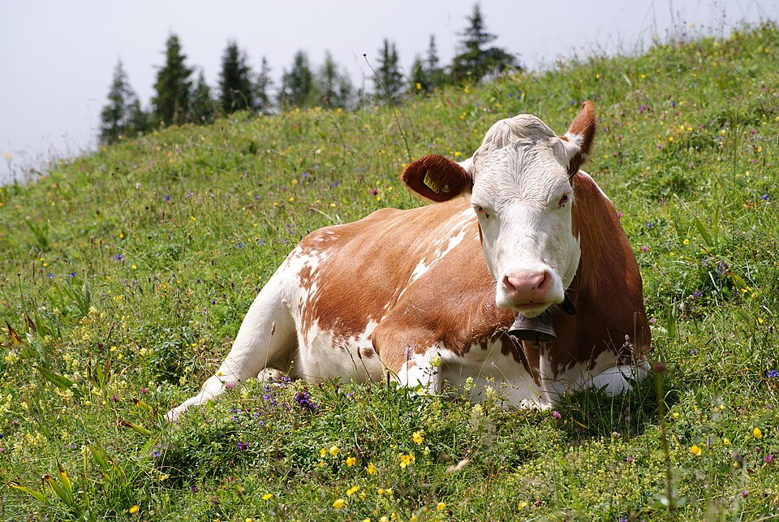
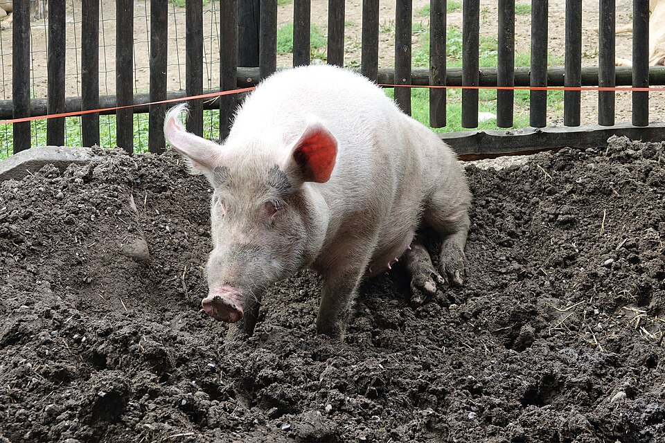
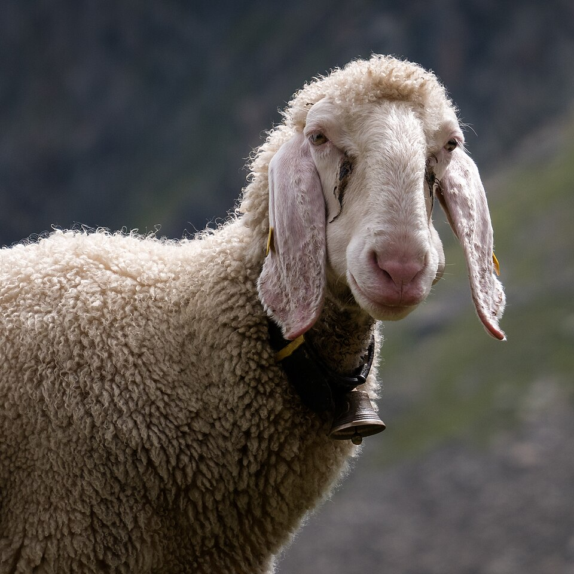
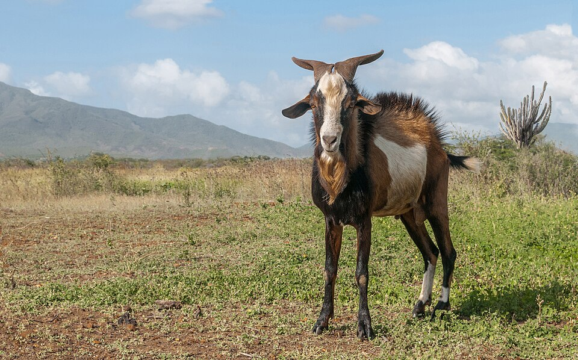
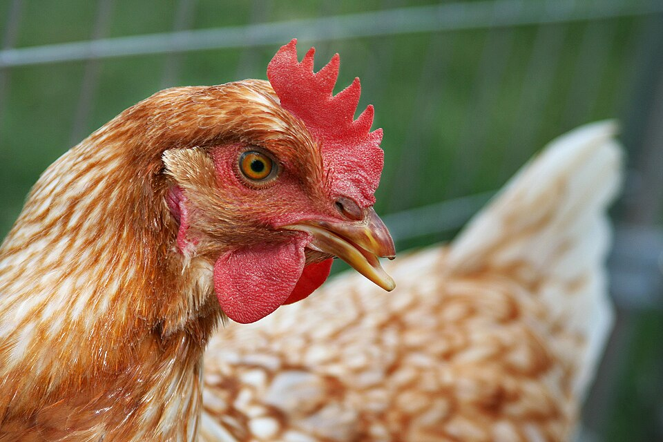
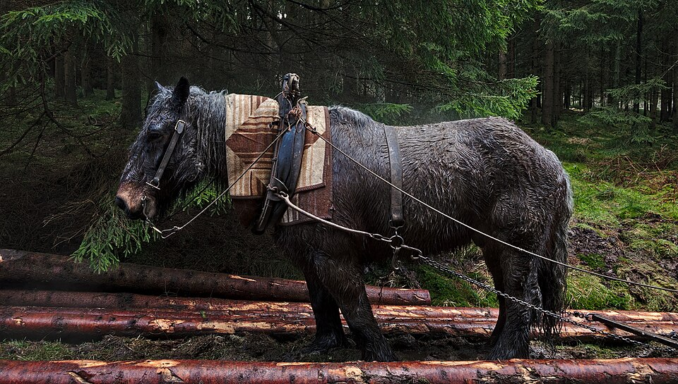
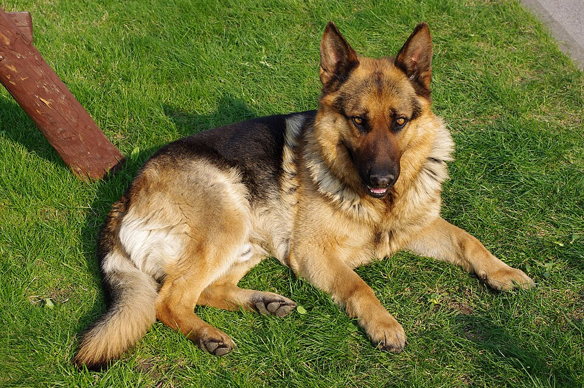
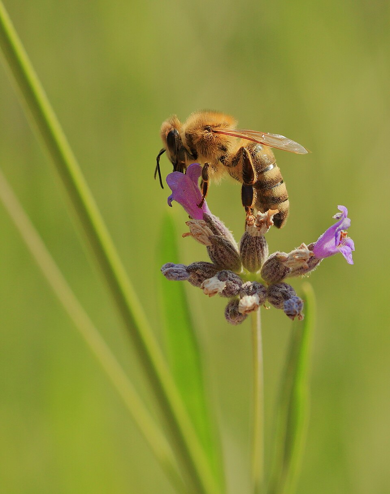
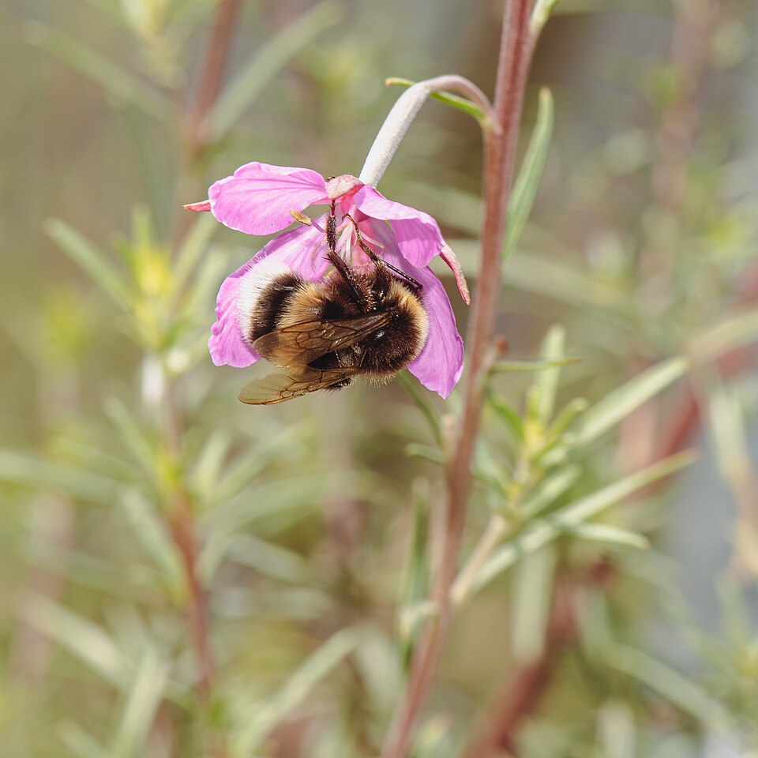

🐝 Živočíchy prospešné pre človeka
Zistíš, ako nám živočíchy pomáhajú: dávajú potravu a suroviny, pracujú s nami, opeľujú rastliny a robia nám spoločnosť. Pochopíš aj to, ako sa z divých zvierat stali domáce a prečo sa o zvieratá treba starať ohľaduplne.
Kapitoly:
- Kto je „prospešný“ a domestikácia
- Hospodárske zvieratá
- Pracovné zvieratá
- Včely a iný hmyz
- Spoločníci a zvieratá v domácnosti
🧭 1. Kto je „prospešný“ pre človeka
Živočích je prospešný (užitočný) pre človeka, keď nám nejakým spôsobom pomáha. Môže to byť päť rôznych spôsobov:
- dáva nám potravu a suroviny (mlieko, mäso, vajcia, vlnu, kožu, med),
- pomáha pri práci (kôň ťahá, pes stráži alebo hľadá),
- chráni prírodu a plodiny, napríklad tým, že loví škodcov,
- opeľuje rastliny, takže dorastie ovocie a zelenina,
- je spoločníkom (robí nám radosť, pomáha pri liečbe).
To, či je živočích pre nás prospešný alebo škodlivý, závisí od situácie a množstva. Voška škodí ruži alebo fazuli, no je potravou pre lienky a vtáky. Hraboš patrí do prírody, ale keď sa premnoží, zničí úrodu na poli. Líška loví hraboše (pomáha), no niekedy si vezme aj sliepku z dvora. V prírode nie sú „zlé“ a „dobré“ zvieratá – každé má svoje miesto.
Domestikácia – ako sa z divého zvieraťa stalo domáce
Domestikácia (zdomácnenie) je dlhá premena divého druhu na domáce zviera, ktoré žije s človekom a je od neho závislé. Netrvala jeden život, ale tisíce rokov a mnoho generácií zvierat.
Ako to prebiehalo? Ľudia si nechávali a rozmnožovali tie zvieratá, ktoré boli krotšie a pokojnejšie, menej sa báli, lepšie rástli, dávali viac mlieka, mäsa či vlny alebo lepšie strážili. Mláďatá po nich tieto vlastnosti zdedili. Tak postupne vznikli plemená – skupiny zvierat toho istého druhu s podobnými vlastnosťami (napríklad dojné plemená kráv).
Prečo to človek robil? Domáce zvieratá mu dávali potravu a suroviny stále a blízko domu, nemusel ich zakaždým uloviť. Pomáhali mu aj pri práci a pri strážení.
Pes je pravdepodobne najstaršie domáce zviera – žil s človekom už v čase, keď ľudia ešte nepestovali plodiny, ale lovili a zbierali potravu.
Domáce zviera je domestikované – krava, ošípaná aj sliepka sú domáce zvieratá, hoci v byte nežijú. Naopak korytnačka v teráriu alebo exotický papagáj žijú v domácnosti, ale domestikované nie sú – sú to divé druhy, ktoré človek chová v zajatí.
- Živočíchy nám dávajú potravu a suroviny, pomáhajú pri práci, chránia úrodu, opeľujú rastliny a sú nám spoločníkmi.
- Domestikácia = premena divého zvieraťa na domáce výberom krotších a úžitkovejších jedincov počas tisícov rokov (vlk → pes, diviak → ošípaná).
- „Prospešný“ a „škodlivý“ závisí od situácie a množstva.
🐄 2. Hospodárske zvieratá a ich úžitok
Hospodárske (úžitkové) zvieratá chová človek kvôli úžitku – teda pre potravu a suroviny. Úžitkovosť znamená, koľko a čoho zviera dáva, napríklad koľko mlieka, vajec alebo vlny. Chovajú sa na farmách, na dvoroch a pasú sa na pasienkoch. Pri každej skupine je v tabuľke aj veta 🤝 o tom, čo zviera potrebuje, aby sa mu u nás dobre žilo.
| Zviera | Čo od neho získavame | Čo vedieť |
|---|---|---|
| 🐄 Hovädzí dobytok krava, býk, teľa | mlieko a z neho syr, maslo, tvaroh, jogurt, smotana; mäso (hovädzie, teľacie); koža (obuv, opasky); hnoj ako hnojivo | Krava dáva mlieko, až keď porodí teľa. Kedysi voly ťahali pluhy a vozy. Je to prežúvavec – trávu prehltne, neskôr ju vráti do úst a prežúva znova. 🤝 Potrebuje pastvu alebo seno, čistú vodu a suchú, čistú maštaľ. |
| 🐖 Ošípaná prasnica, kanec, prasiatko | mäso (bravčové), tuk (masť, slanina), koža | Predkom je diviak. Je to inteligentný všežravec. V blate sa váľa, aby sa ochladila a chránila kožu. 🤝 Potrebuje dosť miesta, podstielku a možnosť rýpať. |
| 🐑 Ovca ovca (bahnica), baran, jahňa | vlna; mlieko a z neho bryndza, oštiepok, žinčica; mäso; koža | Chov oviec na salašoch má na Slovensku dlhú tradíciu. Strihanie vlny ovcu nebolí, je ako strihanie vlasov. 🤝 Potrebuje pastvu, prístrešok pred nepohodou a pravidelné strihanie. |
| 🐐 Koza koza, cap, kozľa | mlieko a syry, mäso, koža, srsť (z niektorých plemien jemná vlna – kašmír, mohér rozširujúce) | Je nenáročná, spása aj listy kríkov a dobre lezie po skalách. 🤝 Potrebuje suchý prístrešok, pohyb a starostlivosť o paznechty. |
| 🐔 Sliepka sliepka, kohút, kuriatko | vajcia, mäso, perie | Sliepka znáša vajcia aj bez kohúta, len sa z nich nevyliahnu kuriatka. 🤝 Potrebuje výbeh, bidielko na spanie a hniezdo na znášanie. |
| 🦆 Kačica a hus | mäso, vajcia, perie a páperie (periny, vankúše, bundy) | Patria k vodnej hydine, majú medzi prstami plávacie blany. 🤝 Potrebujú výbeh a vodu na kúpanie. |
| 🦃 Moriak moriak, morka | mäso | Pôvodne pochádza zo Severnej Ameriky. 🤝 Potrebuje priestorný výbeh a prístrešok. |
| 🐇 Králik | mäso, kožušina | Rýchlo sa rozmnožuje. Z angorského králika sa získava jemná vlna rozširujúce. 🤝 Potrebuje priestorný kotec, seno a pohyb, nie malú tmavú klietku. |
| 🐟 Ryby kapor, pstruh | mäso | Kapor sa chová v teplejších rybníkoch, pstruh potrebuje studenú, čistú tečúcu vodu. 🤝 Potrebujú čistú vodu s dostatkom kyslíka. |

_Oeschinensee_Slaunger_2009-07-07.jpg){kind=link}

_(2).jpg){kind=link}






Rybníky rozširujúce
Rybník je umelo vybudovaná vodná nádrž, v ktorej sa chovajú ryby, na Slovensku najmä kapor. Na jeseň sa z rybníka vypustí voda a ryby sa vylovia (výlov). Rybníky sú zároveň domovom vodných vtákov, žiab a vážok a zadržiavajú vodu v krajine.
Hovädzí dobytok nám dáva oveľa viac než mäso: mlieko a desiatky výrobkov z neho, kožu, hnoj na pole a kedysi aj ťažnú silu. Podobne ovca nie je len vlna – z jej mlieka je bryndza.
- Hospodárske zvieratá: hovädzí dobytok, ošípané, ovce, kozy, hydina, králiky, ryby.
- Dávajú mlieko, mäso, vajcia, vlnu, kožu, perie a mnoho výrobkov z nich.
- Zviera, o ktoré sa dobre staráme (miesto, voda, potrava, zdravie), je spokojnejšie a zdravšie.
🐴 3. Pracovné zvieratá a pomocníci človeka
Pracovné zvieratá pomáhajú človeku svojou silou, rýchlosťou alebo výbornými zmyslami. Najdôležitejšie sú u nás kôň a pes.
Kôň
- Kedysi: ťahal pluh pri oraní, vozy a koče, nosil jazdcov aj poštu. Bez koní by sa ľudia a tovar presúvali oveľa pomalšie.
- Dnes: v lese ťahá vyrúbané kmene (menej poškodí pôdu a mladé stromy ako ťažký stroj), slúži v športe (parkúr, drezúra, dostihy), na rekreáciu a turistiku, v jazdnej polícii a pri hipoterapii (liečba pomocou koňa).
- Spolupráca: kôň je plaché stádové zviera. Človeku poslúcha, keď mu dôveruje. Jazdec ho vedie pokojne – hlasom, opraťami a pohybom tela.
- Pomenovania: žrebec (samec), kobyla (samica), žriebä (mláďa).
🤝 Kôň potrebuje pohyb, spoločnosť iných koní, seno a vodu a pravidelnú starostlivosť o kopytá.
Pes
| Druh práce | Čo pes robí |
|---|---|
| strážny | stráži dom, dvor alebo firmu, ohlási cudzieho |
| pastiersky | stráži stádo pred dravcami (napr. slovenský čuvač na salaši) alebo stádo zháňa a vedie |
| poľovnícky | vyhľadá zver, ukáže, kde je, a prinesie úlovok |
| záchranársky | hľadá ľudí zasypaných v lavíne alebo pod troskami a stratených v lese |
| vodiaci | vedie nevidiaceho človeka, obchádza prekážky, zastaví pri obrubníku |
| služobný | pomáha polícii, colníkom a armáde: hľadá drogy a výbušniny, sleduje stopu |
| spoločník | robí radosť, pomáha pri canisterapii (liečba pomocou psa) |
Pes má v nose oveľa viac čuchových buniek ako človek a veľkú časť mozgu používa na spracovanie pachov. Rozozná pachy, ktoré my vôbec necítime, a dokáže sledovať aj staršiu stopu. Preto ho človek využíva pri hľadaní nezvestných ľudí, zasypaných v lavíne, drog či výbušnín.
🤝 Pes potrebuje každodenný pohyb, výcvik, pozornosť a veterinára.

.jpg){kind=link}


Iní pracovní pomocníci rozširujúce
| Zviera | Kde pracuje | Ako pomáha |
|---|---|---|
| somár | hory, suché krajiny | nosí náklad po úzkych chodníkoch |
| ťava | púšte Afriky a Ázie | nosí ľudí a náklad, dlho vydrží bez pitia; dáva aj mlieko a vlnu |
| sob | sever Európy a Ázie | ťahá sane; dáva mlieko, mäso a kožu |
| slon ázijský | lesy južnej Ázie | kedysi ťahal a prenášal kmene stromov |
| mačka | u nás doma aj na farmách | loví myši a chráni tak zásoby obilia a potravín |
- Kôň kedysi ťahal pluhy a vozy, dnes slúži v športe, rekreácii, lesníctve a pri hipoterapii.
- Pes je strážny, pastiersky, poľovnícky, záchranársky, vodiaci, služobný aj spoločník.
- Človek využíva najmä výborný čuch psa – pri hľadaní ľudí, drog a výbušnín.
🐝 4. Včely a iný hmyz
Včela medonosná je jediný hmyz, ktorý človek chová vo veľkom a pravidelne mu dáva produkty. Chov včiel sa volá včelárstvo a človek, ktorý sa o včely stará, je včelár.
Včelstvo – veľká rodina
Včely žijú v včelstve – v spoločenstve, kde má každá včela svoju úlohu. Vo včelstve sú tri druhy včiel:
Robotnice si práce delia podľa veku: mladé čistia bunky a kŕmia larvy, staršie stavajú plásty a strážia vchod, najstaršie lietajú von na kvety. Robotnica žije v lete len niekoľko týždňov.
Úľ a plást
Včelstvo býva v úli. Vnútri sú vedľa seba zavesené drevené rámiky, na ktorých včely postavia plásty z vosku. Plást tvoria šesťuholníkové bunky. Do buniek ukladajú med a peľ a matka do nich kladie vajíčka. Vchod do úľa sa volá česno.
Vývin včely – úplná premena
Včela sa vyvíja úplnou premenou: vajíčko → larva → kukla → dospelá včela. Larva vôbec nevyzerá ako včela – je to biely beznohý „červík“, ktorý len je a rastie. Potom sa v zavíčkovanej bunke zmení na kuklu a z kukly vylezie hotová včela. Robotnici to trvá približne tri týždne. Rovnako sa vyvíjajú aj motýle (napríklad priadka morušová, pozri nižšie).
Čo nám včely dávajú
| Produkt | Čo to je | Na čo sa používa |
|---|---|---|
| med | včely nasajú z kvetov sladký nektár, v úli z neho odparia vodu, uložia ho do buniek a zavíčkujú voskom | potravina, sladidlo; pre včely je to zásoba potravy na zimu |
| vosk | vylučujú ho žľazy na spodnej strane tela robotníc, stavajú z neho plásty | sviečky, kozmetika, ošetrovanie dreva |
| peľ | „prach“ z kvetov, ktorý včely nosia na nohách v hrudkách | bielkovinová potrava pre larvy; ľudia ho jedia ako doplnok stravy |
| propolis | lepkavá živica, ktorú včely zbierajú z púčikov stromov | včely ním utesňujú a chránia úľ; človek ho používa v prírodných prípravkoch |
| materská kašička | výživná šťava zo žliaz mladých robotníc | kŕmia ňou najmladšie larvy a celý život matku; človek ju používa v doplnkoch výživy |
Opeľovanie – najväčší dar včiel
Opeľovanie (opelenie) je prenos peľu z kvetu na kvet – z peľnice na bliznu. Bez opelenia nevznikne plod ani semeno. Včela pri zbere nektáru zachytí na svoje chlpaté telo peľ a prenesie ho na ďalší kvet. Opeľovače potrebujú napríklad jablone, hrušky, čerešne, slivky, jahody, uhorky, tekvice, repka a slnečnica.
Aj keby sme med vôbec nejedli, včely by nám chýbali. Bez opeľovačov by na stromoch a v záhradách dozrelo oveľa menej ovocia a zeleniny a mnohé divé rastliny by nemali semená. Potom by chýbala potrava aj zvieratám, ktoré sa živia plodmi a semenami.
- Včela medonosná nie je jediný opeľovač. Rovnako dôležité sú divé opeľovače – čmeliaky, samotárske včely, motýle, pestrice a ďalšie.
- Nie všetky plodiny potrebujú hmyz: obilie (pšenica, kukurica) opeľuje vietor. Bez včiel by sme teda mali chlieb, ale menej ovocia a zeleniny.
Iné opeľovače
| Opeľovač | Čo je o ňom dobré vedieť |
|---|---|
| čmeliaky | veľké chlpaté včely, lietajú aj v chladnejšom počasí; v skleníkoch sa chovajú na opeľovanie paradajok |
| samotárske včely rozširujúce | nežijú vo včelstve, každá samička si stavia vlastné hniezdo (napríklad v dierach v dreve) |
| motýle | dlhým cuciakom sajú nektár, opeľujú najmä kvety s hlbokou korunou |
| pestrice (muchy) | vyzerajú ako osy, ale nebodajú; ich larvy navyše jedia vošky |
| osy | opeľujú len trochu, no lovia veľa hmyzu vrátane škodcov |




Priadka morušová – hodváb rozširujúce
Priadka morušová je motýľ, ktorého húsenice sa živia listami moruše. Pred zakuklením sa húsenica zabalí do kokónu z jedného dlhého tenkého vlákna. Ľudia kokóny namáčajú v horúcej vode, vlákno z nich odvinú a spradú z neho hodváb. Priadku chovali ako prví v Číne. Je to domestikovaný hmyz – v prírode by už nedokázala prežiť.
Dobrý včelár udržiava včelstvá zdravé, nechá im dosť zásob na zimu a úle umiestni na pokojné miesto. Pre všetky opeľovače je dôležité, aby sa kvitnúce rastliny nepostrekovali jedmi.
- Včelstvo: matka (kladie vajíčka), robotnice (všetka práca), trúdy (samčeky).
- Včely dávajú med, vosk, peľ, propolis, materskú kašičku, no najdôležitejšie je opeľovanie – bez neho by bolo málo ovocia a zeleniny.
- Včela sa vyvíja úplnou premenou: vajíčko → larva → kukla → dospelá včela.
🐾 5. Spoločníci a zvieratá v domácnosti
Niektoré zvieratá chováme pre radosť a spoločnosť. Zviera však nie je hračka: je to živá bytosť, ktorá cíti hlad, smäd, bolesť aj strach. Kto si zviera vezme, preberá za neho zodpovednosť na celý jeho život.
Každé zviera potrebuje: vhodnú potravu a čerstvú vodu, dostatok miesta, pohyb, čistotu, pozornosť a návštevu veterinára (očkovanie, prehliadky, liečba).
| Zviera | Čo potrebuje | Dobré vedieť |
|---|---|---|
| 🐈 mačka | miesto na spanie, škrabadlo, toaletu s podstielkou, hru | je samostatná, ale potrebuje pozornosť a veterinára |
| 🐕 pes | denné prechádzky, výcvik, spoločnosť | nerád je dlho sám; jeho chov vyžaduje veľa času |
| 🐇 králik | seno, zeleninu, priestor na pohyb mimo klietky | zuby mu rastú celý život, preto musí stále hrýzť seno |
| 🐹 morča | seno, čerstvú zeleninu, spoločnosť ďalšieho morčaťa | je spoločenské – samo je smutné |
| 🐹 škrečok | priestrannú klietku, podstielku na hrabanie, koliesko | žije sám a je aktívny najmä v noci |
| 🐠 akváriové ryby | dostatočne veľké akvárium, filtráciu, vhodnú teplotu vody | do akvária nedávame priveľa rýb |
| 🐦 vtáky (napr. andulka) | veľkú klietku, vyletovanie po izbe, spoločnosť | andulky sú spoločenské, radšej chováme dve |
Zvieratá v terapii rozširujúce
Kontakt so zvieraťom pomáha ľuďom cítiť sa lepšie. Pri canisterapii vyškolení psi navštevujú deti, chorých a starších ľudí. Pri hipoterapii pohyb koňa pomáha ľuďom s poruchami pohybu.
- Nevypúšťaj domáce ani exotické zvieratá do prírody. Domáce zviera v prírode väčšinou zahynie a exotické môže vytlačiť naše druhy. Napríklad vypustené korytnačky písmenkové (s červenými škvrnami za očami) ohrozujú naše vodné živočíchy.
- Nekupuj zviera spontánne (lebo je zlaté alebo ho chce kamarát) a nedávaj ho ako darček-prekvapenie. Pes alebo mačka žijú aj vyše 10 rokov. Najprv si s rodinou premyslite, kto sa bude starať každý deň, aj cez prázdniny.
- Ak zviera hľadáte, myslite aj na útulok – čaká tam veľa zvierat na nový domov.
- Zviera v domácnosti potrebuje potravu, vodu, miesto, pohyb, čistotu, pozornosť a veterinára.
- Majiteľ je za zviera zodpovedný počas celého jeho života.
- Zvieratá nikdy nevypúšťame do prírody a nekupujeme ich spontánne.
📖 Slovníček pojmov
- canisterapia
- liečba a pomoc ľuďom pomocou vycvičeného psa
- česno
- vchod do úľa
- domestikácia
- premena divého druhu na domáci počas tisícov rokov
- domáce zviera
- domestikované zviera, ktoré žije s človekom (aj krava, sliepka)
- hospodárske zviera
- zviera chované pre úžitok (potravu, suroviny)
- hipoterapia
- liečba pomocou koňa, najmä pri poruchách pohybu
- kokón
- obal z vlákna, v ktorom sa zakuklí húsenica (napr. priadky)
- kukla
- štádium vývinu medzi larvou a dospelým hmyzom, v ktorom sa telo prestavuje
- larva
- mláďa hmyzu, ktoré sa nepodobá na dospelého (u motýľa húsenica)
- matka
- jediná samička vo včelstve, ktorá kladie vajíčka
- opeľovanie
- prenos peľu z kvetu na kvet, bez neho nevznikne plod a semeno
- pracovné zviera
- zviera, ktoré pomáha človeku silou, rýchlosťou alebo zmyslami (kôň, pes)
- plást
- stena zo šesťuholníkových voskových buniek v úli
- plemeno
- skupina zvierat jedného druhu s podobnými vlastnosťami, ktorú vyšľachtil človek
- prežúvavec
- bylinožravec, ktorý potravu prehltne a neskôr ju znova prežúva (krava, ovca, koza)
- robotnica
- samička vo včelstve, ktorá vykonáva všetku prácu
- trúd
- samček včely, nemá žihadlo
- úplná premena
- vývin vajíčko → larva → kukla → dospelý jedinec
- úžitkovosť
- koľko a čoho zviera dáva (mlieka, vajec, vlny…)
- včelstvo
- spoločenstvo včiel: matka, robotnice a trúdy
✏️ Na opakovanie
Odpovedaj na vyznačené riadky alebo do zošita. Správne odpovede nájdeš na samostatnej strane na konci.
- Priraď ku každému zvieraťu jeho hlavný úžitok (napíš písmeno).
Zviera Písmeno Úžitok 1 ovca A vajcia 2 sliepka B med a vosk 3 včela medonosná C vlna a bryndza 4 priadka morušová D hľadá zasypaných ľudí 5 záchranársky pes E hodváb 6 hus F perie a páperie - Doplň: Premena divého zvieraťa na domáce sa volá . Predkom psa je a predkom ošípanej je .
- Prečo si človek pri domestikácii nechával a rozmnožoval práve krotšie a úžitkovejšie zvieratá?
- Vymenuj tri výrobky, ktoré získavame z kravského mlieka.
- Zoraď štádiá vývinu včely od začiatku (napíš čísla 1–4): ___ kukla, ___ vajíčko, ___ dospelá včela, ___ larva. Ako sa volá takýto vývin?
- Kto vo včelstve kladie vajíčka, kto zbiera nektár a kto nemá žihadlo?
- Prečo sú včely pre človeka dôležité, aj keby sme vôbec nejedli med?
- Uveď tri príklady, ako človek využíva čuch psa.
- Je lienka vždy prospešná a voška vždy škodlivá? Vysvetli na príklade, prečo „prospešný“ a „škodlivý“ nie je navždy.
- Pravda alebo nepravda? Napíš P alebo N.
a) Včela medonosná je jediný opeľovač. ___
b) Krava je domáce zviera, hoci nežije v byte. ___
c) Sliepka znáša vajcia, len keď je pri nej kohút. ___
d) Domestikácia trvala tisíce rokov. ___ - Prečo nesmieme do rybníka vypustiť korytnačku, ktorá nás už doma nebaví?
- Napíš štyri veci, ktoré potrebuje každé zviera chované v domácnosti.
✅ Správne odpovede (pre rodiča / na kontrolu)
- 1 – C, 2 – A, 3 – B, 4 – E, 5 – D, 6 – F.
- domestikácia; predkom psa je vlk, predkom ošípanej diviak.
- Krotké zviera sa dá chovať blízko domu a nie je nebezpečné. Úžitkovejšie zviera dáva viac mlieka, mäsa či vlny. Mláďatá tieto vlastnosti zdedili, takže sa z generácie na generáciu zlepšovali.
- Napríklad syr, maslo, tvaroh, jogurt, smotana, kefír.
- 1 vajíčko, 2 larva, 3 kukla, 4 dospelá včela. Je to úplná premena.
- Vajíčka kladie matka, nektár zbierajú robotnice, žihadlo nemajú trúdy.
- Včely opeľujú kvety. Bez opelenia by nevzniklo veľa plodov a semien, takže by bolo menej ovocia a zeleniny a menej potravy aj pre iné zvieratá.
- Napríklad hľadanie ľudí v lavíne alebo pod troskami, hľadanie stratených ľudí, hľadanie drog a výbušnín, sledovanie stopy, poľovníctvo.
- Nie. Voška síce škodí rastlinám, ale je potravou pre lienky a vtáky. Ani lienka by nemala čo jesť bez vošiek. Škodlivým sa živočích stáva hlavne vtedy, keď sa premnoží (napr. hraboše na poli).
- a) N (opeľujú aj čmeliaky, motýle, pestrice…); b) P; c) N (znáša aj bez kohúta, len sa z vajec nevyliahnu kuriatka); d) P.
- Korytnačka je nepôvodný (exotický) druh. V prírode môže ohroziť naše živočíchy alebo sama zahynúť. Zviera, o ktoré sa nevieme starať, treba odovzdať do útulku alebo novému majiteľovi.
- Napríklad vhodnú potravu, čerstvú vodu, dostatok miesta, pohyb, čistotu, pozornosť a veterinára.
ℹ️ Poznámka k údajom
Materiál je napísaný vlastnými slovami podľa ŠVP pre 6. ročník ZŠ, nie podľa konkrétnej učebnice. Schémy sú vlastné zjednodušené kresby a nie sú v mierke. Čísla v texte sú zaokrúhlené, orientačné hodnoty. Časti označené rozširujúce idú nad rámec základného učiva. Ak sa vaša učebnica v niektorom pomenovaní líši, riaďte sa ňou.
Na overenie (tvrdenia, ktoré sa v zdrojoch líšia alebo sa môžu meniť):
- pes ako najstaršie domáce zviera – odhady, kedy k domestikácii došlo, sa v zdrojoch líšia (najčastejšie sa uvádza viac ako 15 000 rokov),
- pratur vyhynul (posledný jedinec sa uvádza v 17. storočí v Poľsku),
- vývin robotnice „približne tri týždne“ a „robotnica žije v lete niekoľko týždňov“.
🖼️ Zdroje obrázkov
Schémy sú vlastné kresby autora (SVG). Fotografie pochádzajú z Wikimedia Commons, sú uložené v priečinku obrazky/ a boli len zmenšené na šírku 960 px; na stránke sa zobrazujú orezané na rovnaký pomer strán. Licencie CC BY a CC BY-SA vyžadujú uviesť autora a licenciu; CC0 je voľné dielo.
- Krava: Kim Hansen, CC BY-SA 3.0 – https://commons.wikimedia.org/wiki/File:Cow_(Fleckvieh_breed)_Oeschinensee_Slaunger_2009-07-07.jpg
- Ošípaná: Gzen92, CC BY-SA 4.0 – https://commons.wikimedia.org/wiki/File:Cochon_domestique_(Sus_scrofa_domesticus)_(2).jpg
- Ovca: Basotxerri, CC BY-SA 4.0 – https://commons.wikimedia.org/wiki/File:Stubai_-_Tiroler_Bergschaf_-BT-_01.jpg
- Koza: Wilfredor, CC0 – https://commons.wikimedia.org/wiki/File:Capra_aegagrus_hircus_in_isla_Margarita.jpg
- Sliepka: Thegreenj, CC BY-SA 3.0 – https://commons.wikimedia.org/wiki/File:Hen_chicken.jpg
- Ťažný kôň: Trougnouf, CC BY 4.0 – https://commons.wikimedia.org/wiki/File:Draft_horse_pulling_logs_in_Parc_naturel_Hautes_Fagnes,_Eupen,_Belgium_(VeloTour_54_to_55,_DSCF3703).jpg
- Nemecký ovčiak: Jakub Hałun, CC BY-SA 4.0 – https://commons.wikimedia.org/wiki/File:20110425_German_Shepherd_Dog_8505.jpg
- Včela medonosná: Martin Falbisoner, CC BY-SA 4.0 – https://commons.wikimedia.org/wiki/File:Bee_on_Lavender_Blossom_2.jpg
- Čmeliak: Flocci Nivis, CC BY 4.0 – https://commons.wikimedia.org/wiki/File:20220802_Bombus_01.jpg
Chýbajúci obrázok – kapor: na Commons nebola nájdená vhodná fotografia živého kapra (dostupné zábery ukazovali uloveného kapra alebo boli nejasné). Návrh na doplnenie: kategória Cyprinus carpio na Wikimedia Commons (https://commons.wikimedia.org/wiki/Category:Cyprinus_carpio) alebo vyhľadávanie „carp“ na Openverse (https://openverse.org) s filtrom licencií CC0, CC BY, CC BY-SA.
Licencie: CC BY 4.0 – https://creativecommons.org/licenses/by/4.0/deed.sk · CC BY-SA 3.0 – https://creativecommons.org/licenses/by-sa/3.0/deed.sk · CC BY-SA 4.0 – https://creativecommons.org/licenses/by-sa/4.0/deed.sk · CC0 – https://creativecommons.org/publicdomain/zero/1.0/deed.sk
Obsah vychádza zo Štátneho vzdelávacieho programu pre 6. ročník ZŠ a bol napísaný vlastnými slovami, nie podľa konkrétnej učebnice.